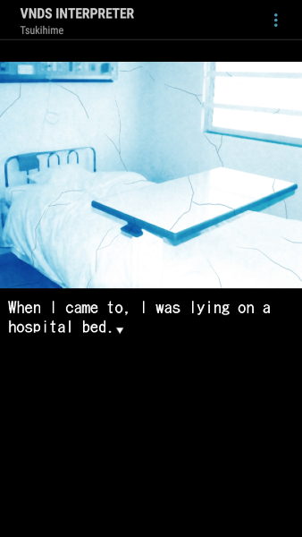
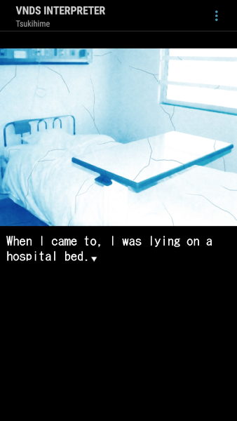
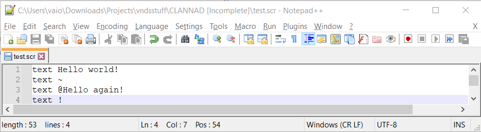

Table of Contents
- About vnds
- VNs playable using vnds
- Opinions on vnds
- Other portable VNs
- DS tutorial
- Android tutorial
- How to make/port for vnds

About vnds
"So, what is vnds?" Some of you may be asking. Well vnds is a homebrew program for the Nintendo DS and Android created by Jake Probst in
2008. Its purpose is to play all of your favorite visual novels on the go, with ports of popular (and not so popular) VNs being made for it
over the years. The Nintendo DS version looks like this:

vnds on Nintendo DS uses the full top screen (256px x 192px) to display backgrounds and character sprites and then using the bottom screen
for text along with menu buttons. Even with the small screen size everything looks quite nice and the use of the bottom screen instead of
text boxes is smart. That might seem like the obvious choice but the Ace Attorney series was able to do readable text on top of graphics. So
the top screen vs. bottom screen could have gone either way. Putting that aside, here's what the android version looks like:
 

The android version of vnds can run all VNs made for the DS but also supports images of 640px x 480px because of the larger screen size.
Android also has more options that the DS does not, but I won't go into details about that, it'd get pretty dry. Now, you may think that's
it for versions of vnds, but you'd be wrong (kind of)! There's two unofficial vnds projects, first VNDS-LOVE. Funnily enough, I can't find
any images of VNDS-LOVE running on 3ds. VNDS-LOVE on 3ds uses a weird image format and isn't really in the best playable state so that's
likely why. Here's a link to the GameBrew page for a bit more information. And here's a link to the only Reddit post which seems to be the only
thing I could find of a VN running on the 3ds version on VNDS-LOVE. Love also has Windows, Mac, Linux and Nintendo Switch versions but
those can be hard to set up and aren't all too interesting. Worry not however, there's another 3ds vnds project! Here's a look at the discontinued
VN3DS project:
Yeah, this is pretty much vnds on the 3ds but a bit worse because it lacks sound, sound effects and the ability to change fade times. This is
pretty interesting but the original vnds is still the better option. And as said earlier, this project has been discontinued, so there's no plans
for any of the missing features. That's about all for the "About vnds" section!
VNs playable using vnds
There's quite a number of VNs playable using vnds so here's a few lists containing all the of the visual novels I'm aware of for the program:
(Please keep in mind that some of these visual novels have both sexual and violent themes)
Standard vnds English
- (AA) WalkthroughVNDS
- Adagio
- Addendum
- Anon's Nice Day
- Ballad of an Evening Butterfly
- Clannad (unfinished)
- Cross Channel
- Ever 17
- Fate Stay Night
- G-Senjou no Maou (unfinished)
- Higurashi no Naku Koro ni
- Higurashi no Naku Koro ni Kai
- Hurricane R4 (unfinished)
- Kanon
- Kikokugai - The Cyber Slayer
- Kira - SnowDrop
- Kira Kira
- Lonely Yuri (unfinished)
- Narcissu 2 - R3
- Never 7
- Niji no Kanata ni
- OMGWTFOTL
- Plain Song
- Planetarian ~The Reverie of a Little Planet~
- Red Shift
- Runaway City (unfinished)
- Saya's song
- Sekien no Inganock
- Shikkoku no Sharnoth
- Sono Hanabira ni Kuchizuke wo 1-9
- The Best Eroge Ever
- The Letter
- The World to Reverse -hallucinate-
- True Remembrance
- Tsukihime
- Tsukihime Plus+Disc
- Tsukihime - Kagetsu Tohya
- Umineko no Naku Koro ni
- Umineko no Naku Koro ni Chiru
- Wanko to Kurasou
- Yume Miru Kusuri
- Yume Wo Mita
Standard vnds Russian
- Cross Channel
- Ever 17
- Saya no Uta
- Umineko no Naku Koro ni
- Umineko no Naku Koro ni Chiru
High Res Russian
- Air Pressure
- Essence Hunt
- Ever 17
- Hikari no Valusia
- Katawa Shoujo
- Phenomeno
- Umineko no Naku Koro ni
- Who is Mike
- Yume Miru Kusuri
- Шепотки
High Res Vietnamese
- Narcissu 2
- Saya no Uta
High Res English
- (AA) WalkthroughVNDS
- Adagio
- Anon's Nice Day
- Ballad of an Evening Butterfly
- Cross Channel
- ef_first
- Ever 17
- Fate Stay Night
- G-Senjou no Maou (unfinished)
- Higurashi no Naku Koro ni
- Higurashi no Naku Koro ni Kai
- Kanon
- Kira -SnowDrop-
- Kira Kira
- Lara's Escape (unfinished)
- Narcissu 2 - R3
- Never 7
- Niji no Kanata ni
- Red Shift
- Saya's song
- Sekien no Inganock
- Shikkoku no Sharnoth
- Sono Hanabira ni Kuchiduke wo 1-9
- True Remembrance
- Tsukihime
- Tsukihime Plus+Disc
- Tsukihime - Kagetsu Tohya
- Umineko no Naku Koro ni
- Umineko no Naku Koro ni Chiru
- VNDS-TEST
- Wanko to Kurasou
- Yume Miru Kusuri
So if you're interested in playing any of those VNs on your DS or Android than you can get the DS version of it here, the Android version here
and the actual VNs here! Please make sure you have a legal copy of the original VNs you download!!!
Opinions on vnds
So what are my personal thoughts on vnds? As someone who loves VNs and obscure software that nobody cares about, vnds was love at first sight!
I have fond memories of just trying to search for any little bit of information I could about the program. So for me personally it's great!
Even in the current landscape of portable consoles, vnds can be pretty handy. It's not going to beat a laptop but some of these VNs aren't on
Switch and Steam Decks are still being shipped, making this little piece of homebrew from 2008 still viable. Overall, I think it's really neat!
Try using it sometime if you plan on going on a trip and need more visual novels in your life! You can always check out the tutorials if you need
to know how to do as such!
Other Portable VNs
Now I would like to talk about some other portable VNs on GBA, DS and 3ds! Since this corner of the website is dedicated to vnds, I'll keep it brief
and only talk about one per console. First, is Chobits for Game Boy Advance!
I have both too much and not enough to say about this visual novel! Quick background, Chobits was a manga series that was published from 2000 to 2002
by some group of people I will mention later as a surprise for those who don't already know (though, I just realized you can tell if you look closely!).
It's about a guy who finds a robot girl named Chii and early 2000s slice of life ensues. It was adapted into an anime in 2002 which this VN is based off.
The visual novel is Japanese only so I can't tell you how closely it follows the anime, but I think it looks really nice. Here's a screenshot:
If you've seen anything about the anime, you'd know that the VN looks pretty dang close to the real thing! There's even full voice acting for the one
word Chii says! It's really short, only being about four hours according to vndb so if you're a fan of Chobits and know Japanese you should play it! And
if you play it tell me what you think, I'll leave my email at the end of this page! So, do you know who made Chobits and the music for it? CLAMP. They
made the "Kakyoin did you lay this egg?" manga. That's just something really weird that didn't know until doing research on the game. If you don't know
about CLAMP or the "egg" manga and want to know more there's a fantastic video about it made by YouTuber Red Bard! But that's about all I have
to say about Chobits GBA! On to the Higurashi series for DS!
The Higurashi series on Nintendo DS is separate from Higurashi on vnds, with the explanation for why that is because they're different games (kind of)!
vnds Higurashi is ports of the question and answer arcs from PC, the question arcs being four arcs and same with the answers, totaling eight. The official
DS Higurashi series by Alchemist is a weird mix of already existing arcs, alternate versions of arcs, adaptations of manga arcs and completely new arcs.
It's odd, confusing and interesting all in one, and I'd love to see a translation of the original and alternate arcs. I just wanted to share because I don't
hear about Higu DS at all (likely due to the language barrier) and also because of Higurashi being a part of vnds. It gets a bit gorey at times but if you're
fine with that then I think you should give the series a try (DS or otherwise haha). I'm on the third arc as of writing ^-^. But I'm getting off-topic, onto
the final portable VN here today, DDLC-LOVE!
DDLC-LOVE is a port of Doki Doki Literature Club for Nintendo Switch, 3ds, PS Vita, PSP and PS3, yeah, that's a lot. As you might have guessed, DDLC-LOVE
was created before the eventual official console ports. Due to this, DDLC-LOVE is no longer being updated which is a shame, the official port is only on one of
those consoles after all. If you're wondering how all the fourth-wall breaky stuff works, I can only answer that question partially. Deleting the character
files is a part of the options menu in game, but I don't know about the other stuff on account of the game repeatedly crashing. This is on the 3ds version and
apparently the only problem with the Switch version is some sound issues. Since this homebrew port is already on Switch, the only other version that I would
recommend you try out is the Vita version (which is also recommended by the creator) if this interests you. That's it for "Other Portable VNs" and if you
want to try DDLC-LOVE here you go!
Nintendo DS Tutorial
This here is a tutorial for how to get vnds working for DS, there's also an Android tutorial later on this page. I won't be doing tutorials for any other consoles as
I either don't have access to the consoles in question or they use VNDS-LOVE which is, decent at best. Okay, first will be what you'll need followed by
the step-by-step guide.
What You'll Need
- A console from the DS/3ds family of systems
- A DS flashcard
- A Micro SD card (typically comes with flashcards)
- A computer with an internet connection
- A Micro SD card adapter (if using a computer without a Micro SD slot)
Step 1
Step 1 is simple, all you must do is download any version of vnds from the Digital Haze website onto your device.
Step 2
Take your Micro SD card and insert it into your computer, make sure it is formatted as FAT32. If it's not, right-click the card and select format in the
drop down menu, FAT32 should be one of the default options.
Step 3
Unzip the downloaded file and copy the "vnds" folder onto the root of your SD card, do not put "vnds" into any other folders on your SD card.
Step 4
Download the VNs you'd like to play from here (only get freeware VNs and ones that you have legal copies of!). Make sure that when you unzip one of these
files you put all the contents into a new folder. If the downloaded VN has things like "sound.zip" or "background.zip" etc. you don't have to unzip those.
Step 5
Copy all of the folders of the visual novels you want to play into the "novels" folder which is inside the "vnds" folder.
Step 6
Put the micro SD card into your flashcard, once you put it into your console select vnds through your flashcard's menu and get to playing some VNs!
Android Tutorial
This is the tutorial for how to get vnds running on your android phone, there is also a DS tutorial earlier up on this page. I also won't be doing tutorials for any
other platforms for reasons I already mentioned in the DS tutorial. Anyway, here is a list of what you'll need followed by the step-by-step guide.
What You'll Need
- An Android phone
- An internet connection
- The WinRAR app
Step 1
If you have not already, download the WinRAR app from the App Store/Play Store. vnds and the VNs are in the .zip format when downloaded, so that's why
this is needed.
Step 2
Download the Visual Novel Interpreter APK from this link and install it.
Step 3
Download the novels you want and have legal copies of from the MEGA link.
Step 4
Create a folder named "novels" on your phone, the vnds interpreter should automatically detect it. In the novels folder create a folder for each
one of your VNs.
Step 5
Using the WinRAR app (or any other app that can unzip .7zip files now that I think of it.) unpack each VN into their folders.
Step 6
Enjoy your VNs! That's all there is to it. As said earlier the interpreter should auto-detect the novels folder, and if not there is a manual
way to pick a file path. So that's it for the tutorials but if you want to make a VN or port one to vnds, keep reading!
How to Make/Port For vnds
Making games for vnds is fairly simple and easy to understand, even more so if you have even a little bit of basic programming knowledge! Porting
probably couldn't even be considered porting, it's mostly just copying the text and resizing assets. Annoying if the script isn't online and the
VN has a lot of branching paths though. I'm going to keep things simple, first starting with how your average vnds VN's file paths and formats
should look and what each file and folder means.
Going from top to bottom, first is the background folder. It contains all of the background images for a VN, very simple! Important things to
note are that backgrounds should be in the JPG format and should be 256px x 192px in size to fit the DS screen. If you only care about your VN
working on Android then backgrounds can be 640px x 480px instead. The foreground folder is very similar, just housing character sprites instead!
There are two differences however, foregrounds should be in the PNG format, and they can be any size smaller than the backgrounds (either less
than 256 x 192 or 640 x 480 depending on platform.). Next is the script folder which is a little weird. I'll go through all the syntax and
stuff after this so just stick with me. The script file format is .scr, a screensaver file, and I'm not quite sure how to create those so your
best bet is to download a vnds VN, copy one of the .scr files and then edit it. Which brings us to how screensavers need to be edited to house
text. You need to download an external program, personally I use Notepad++ but I'm sure there are others out there. Skin is an optional one so
I'll mostly gloss over it, but it's basically there just to change the appearance of vnds if you'd like. Next is sound, which is for sound effects
and music. Music is simple, with the only requirement being that files be mp3 files. Sound, is quite frankly, really a pain, but I'll try to make
it's simple. I'm probably making it out harder than it is, but I was trying to figure this out with outdated info so cut me some slack. First, watch
this video, so you can install ffmpeg then, open command prompt and type this: "ffmpeg -i nameoffile.mp3 nameofconverted.aac".
With that sound effects should work. The "default.ttf" file is a text font if you didn't already know all you have to do is name a font of your
choosing "default" to use your own. You can also just not have one and vnds will automatically use the system font. Icon is the image that shows up
on the bottom screen next to the name of your VN, it must be a PNG and 32px x 32px. If you do not have an "icon.png" than it will default to a black
box. "info.txt" is another simple one, all it is one line of text formatted as follows "title=Title Goes Here" this title will be the one that will
appear in vnds, not the name of the folder. And last but not least is "thumbnail.png", it's basically the same as "icon.png" but for the top screen
and a size of 100px x 75px instead. So that's it for the file structure, now for how to actually create the script. Once again I'll be going one by
one, with a few more pictures for clarity.
Text

Text is the most basic requirement when it comes to visual novels and as such, the 4 lines of text on screen are very simple. To write any text
at all on screen you have to type "text" followed by what you'd like to write. Text followed by a tilde (~) will create a blank line. Having a
"@" symbol before what you'd like to write will make it so that you don't have to press a button for that line to appear. And finally, text
followed by an exclamation mark will make a blank line that needs a button to be pressed to advance. Next is loading backgrounds and such.